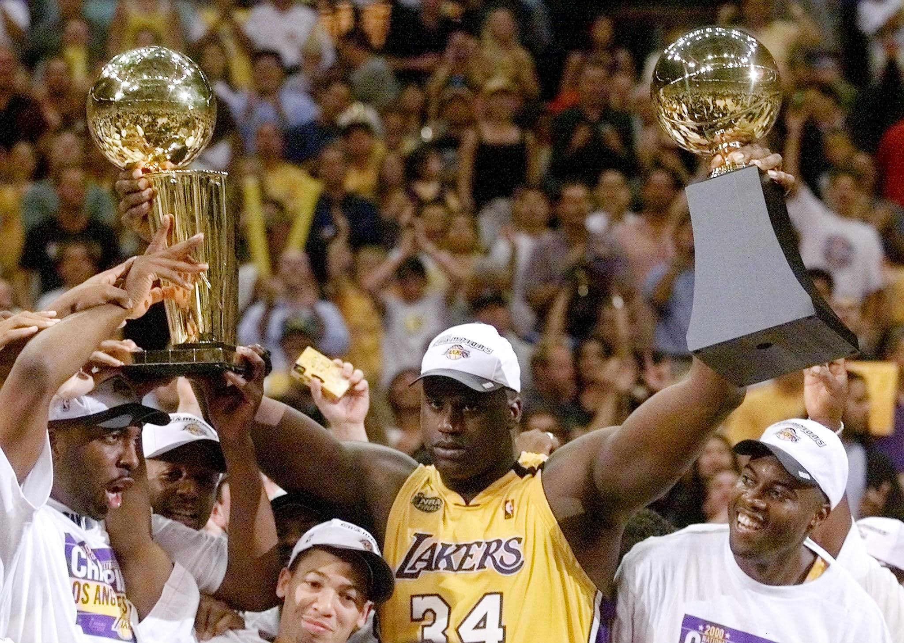
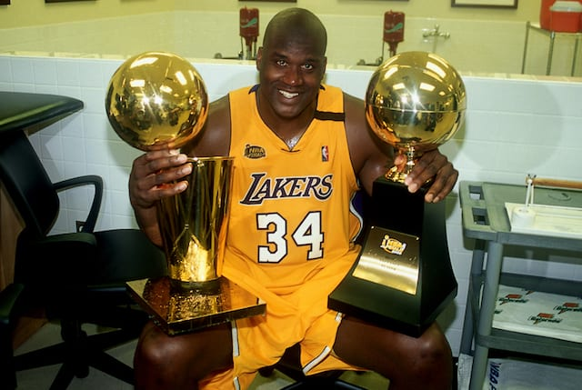

Shaquille O'Neal


Shaquille O'Neal, one of the most dominant centers in NBA history, used his size, strength, and charisma to become a global basketball icon. His career spanned from 1992 to 2011.
Career Achievements:
- NBA Championships: 4 (2000, 2001, 2002, 2006)
- NBA Most Valuable Player (MVP): 1 (2000)
- NBA Finals MVP: 3 (2000, 2001, 2002)
- NBA All-Star Appearances: 15
- NBA All-NBA First Team: 8 times
- NBA All-Defensive Second Team: 3 times
- NBA Rookie of the Year: 1993
All-Time Rankings:
- Points: 28,596 – 23.7 PPG
- Rebounds: 13,099 – 10.9 RPG
- Assists: 3,026 – 2.5 APG
- Blocks: 2,732 – 2.3 BPG
- Field Goals Made: 11,330
- Field Goal Percentage: 58.2%
- Free Throw Percentage: 52.7%
- Minutes Played: 41,918
Single-Game Records:
- Most Points in a Game: 61
- Most Rebounds in a Game: 28
- Most Blocks in a Game: 15 (unofficial stat)
Notable Career Feats:
- Led Lakers to a 3-peat (2000–2002)
- One of the most efficient scorers in NBA history
- Dominated the paint physically like no other
- Scored 28,000+ career points despite poor free throw shooting
Hall of Fame Induction:
- 2016: Shaquille O'Neal was inducted into the Naismith Memorial Basketball Hall of Fame
Shaq wore #32 for the Magic and Lakers, and #34 during his peak Lakers years. His combination of power and agility made him one of the most unguardable forces in league history.